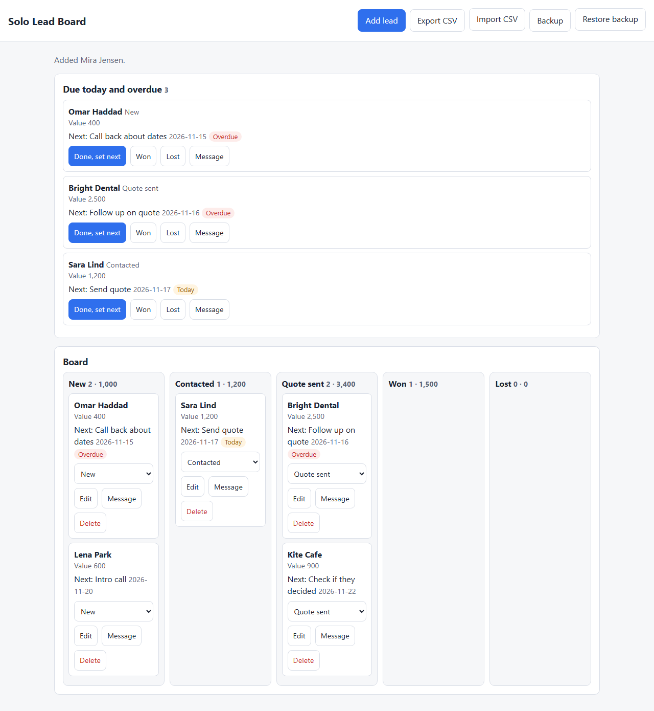
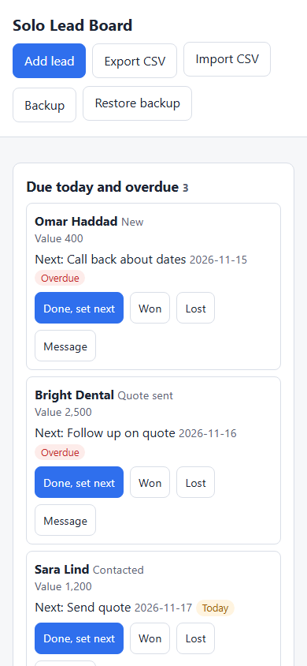
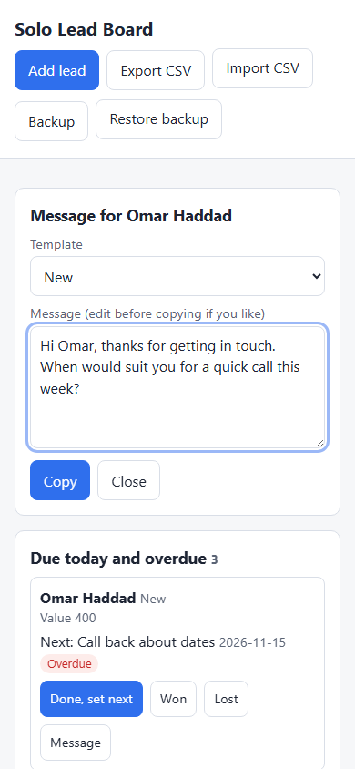

Know who to follow up with today.
Solo Lead Board keeps every enquiry in one place: who they are, what stage they are at, and what you said you would do next. Open one file in your browser. The people you need to chase today are at the top.
Buy Solo Lead Board for $9
You'll like this if
- Enquiries reach you by email, DM or phone, and you keep track of them in your head or a notes app.
- You have sent a quote and forgotten to chase it.
- A full CRM like HubSpot or Pipedrive is more than you need.
Not for you if a team needs to share one pipeline, or you need email sync or automatic reminders. Solo Lead Board is for one person on one device.
With Solo Lead Board you can
- Add a lead with a name, a value and your next step with a date.
- See every lead whose next step is due today or overdue, at the top of the page.
- Move leads through five stages: New, Contacted, Quote sent, Won and Lost. Each column shows how many leads and their total value.
- Press Done, set next to finish a step and plan the next one in one go.
- Copy a short follow-up message for each stage, with the first name filled in. Edit it and send it yourself.
- Import and export CSV (opens in Excel or Google Sheets), and save or restore a backup file.


Set up in 3 steps
- Pay, then press Download ZIP on your download page and unzip it.
- Open
index.htmlin your browser. Nothing to install. - Press Add lead. Save a backup file once a week.
What you get
- Solo Lead Board (one file that works offline)
- A one-page setup guide
- A licence for personal and business use
If something goes wrong
- Refund: if it does not work for you, ask within 14 days of purchase and you get your money back.
- Help: open a request on our support page. Requests there are public, so never post card details or order numbers.
- If the browser cannot save (for example a private window or full storage), a red message appears and the change is not applied, so you do not lose what you had.
- Limits: your leads live in one browser and do not sync on their own. Clearing your browser data deletes them, so keep the backup file.
Questions
How do I get it after paying?
Stripe sends you straight to your download page after payment. Bookmark it, press Download ZIP, unzip, and open index.html. Lost the page? Open a support request and we will send the link again.
Does it work on my phone?
Yes, in a modern phone browser; the board stacks into one column. Your phone keeps its own list; use a backup file to move leads between devices.
Where is my data?
Only in your browser on your device. Nothing is uploaded to us.
How many leads can it hold?
We tested it with 150 leads on phone and desktop sizes.
Can I use it in Notion or Google Sheets?
No, it is its own file. You can export CSV and open it in Sheets or Excel.